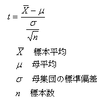
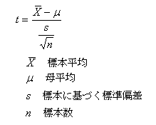
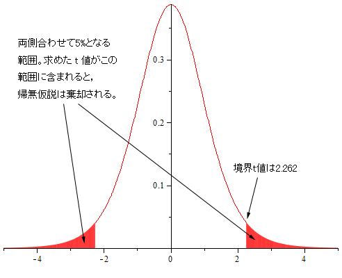
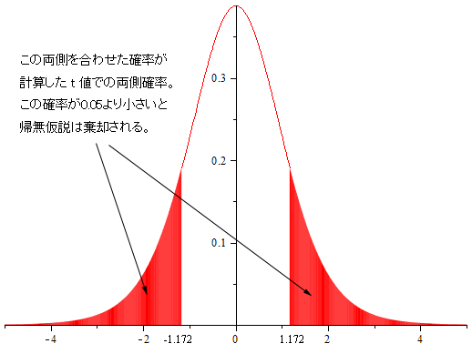
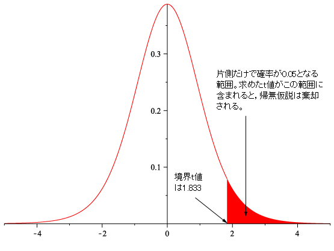
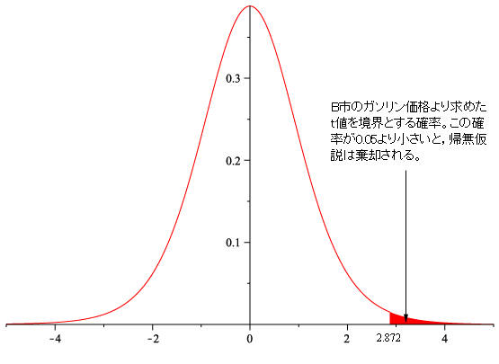

いくつかの標本について，その平均値が母集団の平均値と等しいと言って良いか，あるいは2つのグループの平均値を等しいと言って良いかということを考える。これを平均値の検定という。
平均値の検定を行う場合，先のコインの例と同じように，仮説を元に観測した事象が起こる確率を求めなければならない。そのために，サンプルから得られる平均値がどのような分布になるかを知る必要がある。
以下，母集団は正規分布に従うとする。（母集団の分布は正規分布になっているということ）
正規分布は下の作業のグラフ参照。直感的には，二項分布で N を大きくしたときの極限と考えてよい。
母集団の標準偏差σまたは分散（*）が既知ならば，

で与えられる t は標準正規分布 N(0, 1) に従うことが知られている。（この式の分子は，平均値が0に，分母は分散が1になるように変換したものである。） よって母集団の分散が既知の場合には，正規分布を用いた検定を行えば良い。つまり観測した結果が正規分布のどのあたりに位置するかにより，仮説を採択するか否かの判断をすれば良い。
しかし一般に，母集団の分散が分かっている事は稀である。そこで母集団の標準偏差の代わりに，標本の標準偏差を用いて以下の様に変数t を定義する。

これで定義した t は自由度 n-1 の t 分布と呼ばれる分布に従う。
（*）標準偏差と分散は， いずれもデータの散らばり具合を表す値。この値が大きければ散らばり方も大きい
t 分布は標本数が大きいと正規分布に近くなる。これを，以下のようにして確認せよ。
なお，これは確率密度関数のグラフで，面積が確率を表すことに注意すること。
以下，母分散が未知として平均値の検定を行う。上記のように，標本の標準偏差を使用したtの値は自由度n-1のt分布に従うので，求めたt値がt分布のどの辺りに位置するかで検定を行う。このような検定を，t 検定という。標本数が大きいとt 分布は正規分布に近くなるので，このような場合には正規分布による検定を行えば良い。t 検定は標本数が8～20位のときに用いるのが適当と言われている。
以下，ガソリン価格の例を使って検定方法を説明する。
下のデータは，A市とB市のガソリンスタンドごとのガソリン価格である。
| A市 | 112 | 116 | 114 | 110 | 108 | 120 | 109 | 116 | 115 | 116 |
| B市 | 119 | 117 | 114 | 123 | 125 | 119 | 115 | 119 | 124 | 113 |
全国平均が115円であるということが分かっているときに，それぞれの市のガソリン価格は全国平均と同じと言ってよいかどうかを，有意水準 0.05 で検定する。
計算例は，以下の通りである。ここでは変数名に日本語を使用している。3行目のA市をB市に変更すれば，B市のt値を計算できる。
帰無仮説 ： A市の（またはB市の）ガソリンの平均価格は全国平均に等しい。
対立仮説 ： A市の（またはB市の）ガソリンの平均価格は全国平均に等しくない。
として，有意水準 0.05 で両側検定（*）を行う。
標本数は 10 であるので，ここで計算した t は自由度 9 の t 分布に従う。よって自由度 9 の t 分布において，両側合わせた確率が 0.05 となる 境界 t 値 を求めて，それを各市の t 値の絶対値と比較すれば良い。
両端合わせて 5% になる t 値は，-qt(0.025, df=9) により求められる。この値は -2.26216 となる。つまり，95%となる区間が (-2.26216, 2.26216)ということである。
A市の t 値はこの区間に含まれ，仮説は棄却できない。（等しいことを積極的に示しているわけではない。許容範囲に含まれる，程度の意味である。）
B市の t 値の絶対値はこの区間に含まれないので，仮説は棄却される。つまり等しくないと言ってよい。

それぞれの市の t値の絶対値に対して，関数 pt（-t値の絶対値，9））*2 を使って t 値までの両側確率を計算し，それと0.05を比較してもかまわない。
A 市の場合，この値は 0.27125 となる。つまり A 市の t 値は，両側合わせて 27% 位の位置にある。
B 市の場合，この値は 0.01843 となる。つまり B 市の t 値は，両側合わせて 1.8% 位の位置にあることになり，かなり端にあることが判る。

上で使用した関数は，次の計算をする。
qt：確率を与えて，左端からの累積（つまり面積）がその確率とひとしくなるt値を求める
pt：t値を与えて，左端からそのt値までの確率を与える。
ここまでの計算は，上の例の式に下の式を追加する。ここで # で始まる行はコメントであるので，何を書いても構わない。
#以下，境界t値を求める。これとサンプルのt値を比較する
-qt(0.025, df=標本数-1)
#以下，計算したt値までの両側確率を求める。これと有意水準を比較する。
pt(-abs(t値), df=標本数-1)*2
帰無仮説 ： A市のガソリンの平均価格は全国平均に等しい。
対立仮説 ： A市のガソリンの平均価格は全国平均に等しくない。
A市のガソリン価格からt値を求めると -1.172 となる。
一方，自由度9のt分布の両側5%となる境界値は 2.262 である。よって求めたt値は両側5%の棄却域に入っておらず，帰無仮説は棄却できない。つまり，A市のガソリン価格は全国平均より高いとは言えない。
帰無仮説 ： A市のガソリンの平均価格は全国平均に等しい。
対立仮説 ： A市のガソリンの平均価格は全国平均に等しくない。
A市のガソリン価格からt値を求めると -1.172 となる。このt値における両側確率は，0.271 となり有意水準 0.05 よりも大きい。よって帰無仮説は棄却できない。つまり，A市のガソリン価格は全国平均より高いとは言えない。
B市の検定についても整理せよ。
帰無仮説 ： ガソリンの平均価格は全国平均に等しい。
対立仮説 ： ガソリンの平均価格は全国平均より高い。
として，有意水準 0.05 で片側検定（*）を行う。この帰無仮説の論理的な否定は対立仮説ではないが，仮説検定では等号を仮定する。（そうしないと仮説を元に種々の計算が出来ない）
A市については検定を行う必要はないので，B市について有意水準 0.05 で片側検定を行う。
自由度 9 の t 分布において，大きい方からの確率が 0.05 となる t の値を求めて，それを各市の t 値と比較する。右側 t 値（大きい方から 5% になる t 値）は，=-qt(0.05, df=9) により求められ，この値は 1.83311 となる。前にマイナス記号を付けるのは，T.INVは左側の境界t値を返すからである。
B市の t 値はこの値よりも大きく，仮説は棄却される。つまり高いと言える。（下図）

t値の絶対値に対して pt（-t値の絶対値，9） （t値の絶対値より左側にある確率），あるいは 1-pt（t値の絶対値，9）を計算し，それと0.05を比較してもかまわない。
B 市の場合，この値は 0.00921 となる。つまり B 市の t 値は，きいほうから 0.009（0.9%） の位置（かなり右側）にあることになり，これは0.05（5%）より小さい。よって帰無仮説は棄却され，全国平均より高いと言える。（下図）

（*）両側検定，片側検定
最初の例のように等しいか否かを検定する場合は，分布の両端に含まれていなければ等しいと言える。この様な場合を両側検定と呼ぶ。一方後者の例は大きいほうに含まれるか否かを検定するので，小さい方（左端の方）の偏った位置にあっても棄却はされない。この様な場合を片側検定と呼ぶ。
t分布のように左右対称の分布では，両側10%となる値と片側5%となる値は一致する。
ここまでの計算をRで整理せよ。
また検定についても，帰無仮説から結論までを整理せよ。
t検定には，関数 t.test を使用することもできる。
例えば上の例であれば，
t.test(A市, mu=115)
として，母平均を115としたときのt検定を行える。
このような関数があるかどうかを調べるには，関数 help.search を使用する。例えば，t検定の関数を知りたい場合には，
help.search("t-test")
のように，キーワードを " で囲んで記述する。